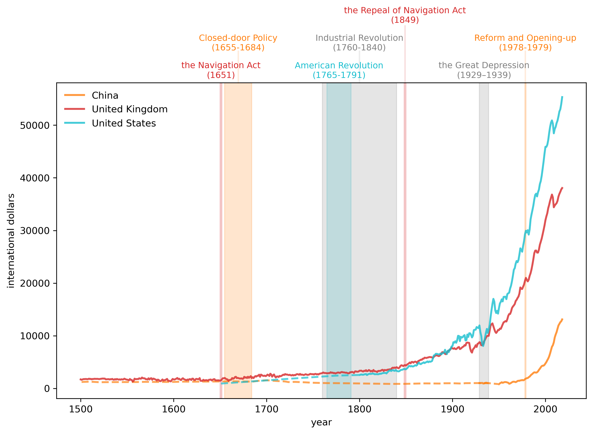
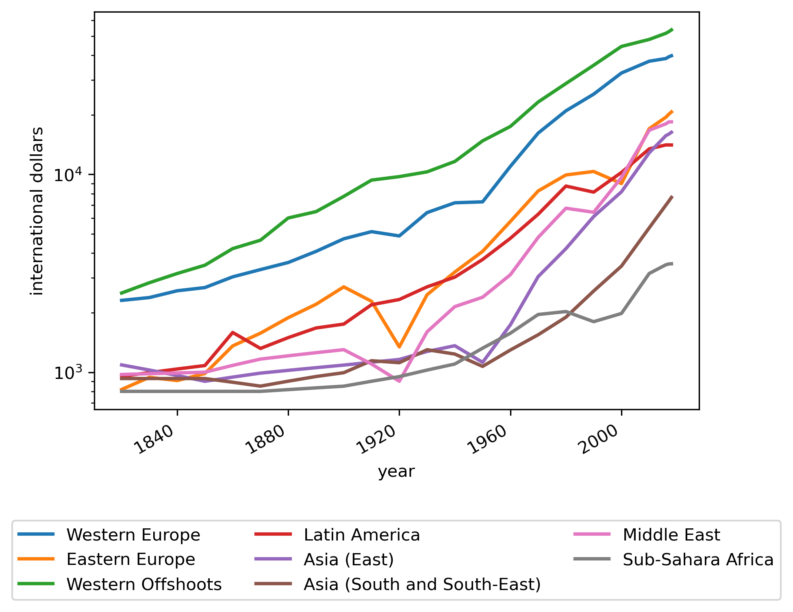

Long-Run Growth#
import pandas as pd
import matplotlib.pyplot as plt
import matplotlib.cm as cm
import numpy as np
from collections import namedtuple
data_url = "/Users/danypineault/Documents/Code/Apps/ModellingTheWorld/Data/mpd2020.xlsx"
data = pd.read_excel(data_url,
sheet_name='Full data')
data.head()
| countrycode | country | year | gdppc | pop | |
|---|---|---|---|---|---|
| 0 | AFG | Afghanistan | 1820 | NaN | 3280.0 |
| 1 | AFG | Afghanistan | 1870 | NaN | 4207.0 |
| 2 | AFG | Afghanistan | 1913 | NaN | 5730.0 |
| 3 | AFG | Afghanistan | 1950 | 1156.0 | 8150.0 |
| 4 | AFG | Afghanistan | 1951 | 1170.0 | 8284.0 |
countries = data.country.unique()
len(countries)
169
country_years = []
for country in countries:
cy_data = data[data.country == country]['year']
ymin, ymax = cy_data.min(), cy_data.max()
country_years.append((country, ymin, ymax))
country_years = pd.DataFrame(country_years,
columns=['country', 'min_year', 'max_year']).set_index('country')
country_years.head()
| min_year | max_year | |
|---|---|---|
| country | ||
| Afghanistan | 1820 | 2018 |
| Angola | 1950 | 2018 |
| Albania | 1 | 2018 |
| United Arab Emirates | 1950 | 2018 |
| Argentina | 1800 | 2018 |
code_to_name = data[
['countrycode', 'country']].drop_duplicates().reset_index(drop=True).set_index(['countrycode'])
gdp_pc = data.set_index(['countrycode', 'year'])['gdppc']
gdp_pc = gdp_pc.unstack('countrycode')
gdp_pc.tail()
| countrycode | AFG | AGO | ALB | ARE | ARG | ARM | AUS | AUT | AZE | BDI | ... | URY | USA | UZB | VEN | VNM | YEM | YUG | ZAF | ZMB | ZWE |
|---|---|---|---|---|---|---|---|---|---|---|---|---|---|---|---|---|---|---|---|---|---|
| year | |||||||||||||||||||||
| 2014 | 2022.0000 | 8673.0000 | 9808.0000 | 72601.0000 | 19183.0000 | 9735.0000 | 47867.0000 | 41338.0000 | 17439.0000 | 748.0000 | ... | 19160.0000 | 51664.0000 | 9085.0000 | 20317.0000 | 5455.0000 | 4054.0000 | 14627.0000 | 12242.0000 | 3478.0000 | 1594.0000 |
| 2015 | 1928.0000 | 8689.0000 | 10032.0000 | 74746.0000 | 19502.0000 | 10042.0000 | 48357.0000 | 41294.0000 | 17460.0000 | 694.0000 | ... | 19244.0000 | 52591.0000 | 9720.0000 | 18802.0000 | 5763.0000 | 2844.0000 | 14971.0000 | 12246.0000 | 3478.0000 | 1560.0000 |
| 2016 | 1929.0000 | 8453.0000 | 10342.0000 | 75876.0000 | 18875.0000 | 10080.0000 | 48845.0000 | 41445.0000 | 16645.0000 | 665.0000 | ... | 19468.0000 | 53015.0000 | 10381.0000 | 15219.0000 | 6062.0000 | 2506.0000 | 15416.0000 | 12139.0000 | 3479.0000 | 1534.0000 |
| 2017 | 2014.7453 | 8146.4354 | 10702.1201 | 76643.4984 | 19200.9061 | 10859.3783 | 49265.6135 | 42177.3706 | 16522.3072 | 671.3169 | ... | 19918.1361 | 54007.7698 | 10743.8666 | 12879.1350 | 6422.0865 | 2321.9239 | 15960.8432 | 12189.3579 | 3497.5818 | 1582.3662 |
| 2018 | 1934.5550 | 7771.4418 | 11104.1665 | 76397.8181 | 18556.3831 | 11454.4251 | 49830.7993 | 42988.0709 | 16628.0553 | 651.3589 | ... | 20185.8360 | 55334.7394 | 11220.3702 | 10709.9506 | 6814.1423 | 2284.8899 | 16558.3123 | 12165.7948 | 3534.0337 | 1611.4052 |
5 rows × 169 columns
country_names = data['countrycode']
# Generate a colormap with the number of colors matching the number of countries
colors = cm.tab20(np.linspace(0, 0.95, len(country_names)))
# Create a dictionary to map each country to its corresponding color
color_mapping = {country: color for
country, color in zip(country_names, colors)}
def draw_interp_plots(series, # pandas series
countries, # list of country codes
ylabel, # label for y-axis
xlabel, # label for x-axis
color_mapping, # code-color mapping
code_to_name, # code-name mapping
lw, # line width
logscale, # log scale for y-axis
ax # matplolib axis
):
for c in countries:
# Get the interpolated data
df_interpolated = series[c].interpolate(limit_area='inside')
interpolated_data = df_interpolated[series[c].isnull()]
# Plot the interpolated data with dashed lines
ax.plot(interpolated_data,
linestyle='--',
lw=lw,
alpha=0.7,
color=color_mapping[c])
# Plot the non-interpolated data with solid lines
ax.plot(series[c],
lw=lw,
color=color_mapping[c],
alpha=0.8,
label=code_to_name.loc[c]['country'])
if logscale:
ax.set_yscale('log')
# Draw the legend outside the plot
ax.legend(loc='upper left', frameon=False)
ax.set_ylabel(ylabel)
ax.set_xlabel(xlabel)
# Define the namedtuple for the events
Event = namedtuple('Event', ['year_range', 'y_text', 'text', 'color', 'ymax'])
fig, ax = plt.subplots(dpi=300, figsize=(10, 6))
country = ['CHN', 'GBR', 'USA']
draw_interp_plots(gdp_pc[country].loc[1500:],
country,
'international dollars','year',
color_mapping, code_to_name, 2, False, ax)
# Define the parameters for the events and the text
ylim = ax.get_ylim()[1]
b_params = {'color':'grey', 'alpha': 0.2}
t_params = {'fontsize': 9,
'va':'center', 'ha':'center'}
# Create a list of events to annotate
events = [
Event((1650, 1652), ylim + ylim*0.04,
'the Navigation Act\n(1651)',
color_mapping['GBR'], 1),
Event((1655, 1684), ylim + ylim*0.13,
'Closed-door Policy\n(1655-1684)',
color_mapping['CHN'], 1.1),
Event((1848, 1850), ylim + ylim*0.22,
'the Repeal of Navigation Act\n(1849)',
color_mapping['GBR'], 1.18),
Event((1765, 1791), ylim + ylim*0.04,
'American Revolution\n(1765-1791)',
color_mapping['USA'], 1),
Event((1760, 1840), ylim + ylim*0.13,
'Industrial Revolution\n(1760-1840)',
'grey', 1.1),
Event((1929, 1939), ylim + ylim*0.04,
'the Great Depression\n(1929–1939)',
'grey', 1),
Event((1978, 1979), ylim + ylim*0.13,
'Reform and Opening-up\n(1978-1979)',
color_mapping['CHN'], 1.1)
]
def draw_events(events, ax):
# Iterate over events and add annotations and vertical lines
for event in events:
event_mid = sum(event.year_range)/2
ax.text(event_mid,
event.y_text, event.text,
color=event.color, **t_params)
ax.axvspan(*event.year_range, color=event.color, alpha=0.2)
ax.axvline(event_mid, ymin=1, ymax=event.ymax, color=event.color,
clip_on=False, alpha=0.15)
# Draw events
draw_events(events, ax)
plt.show()

Regional analysis#
data = pd.read_excel(data_url,
sheet_name='Regional data',
header=(0,1,2),
index_col=0)
data.columns = data.columns.droplevel(level=2)
regionalgdp_pc = data['GDP pc 2011 prices'].copy()
regionalgdp_pc.index = pd.to_datetime(regionalgdp_pc.index, format='%Y')
regionalgdp_pc.interpolate(method='time', inplace=True)
fig, ax = plt.subplots(dpi=300)
regionalgdp_pc.plot(ax=ax, xlabel='year',
lw=2,
ylabel='international dollars')
ax.set_yscale('log')
plt.legend(loc='lower center',
ncol=3, bbox_to_anchor=[0.5, -0.5])
plt.show()
